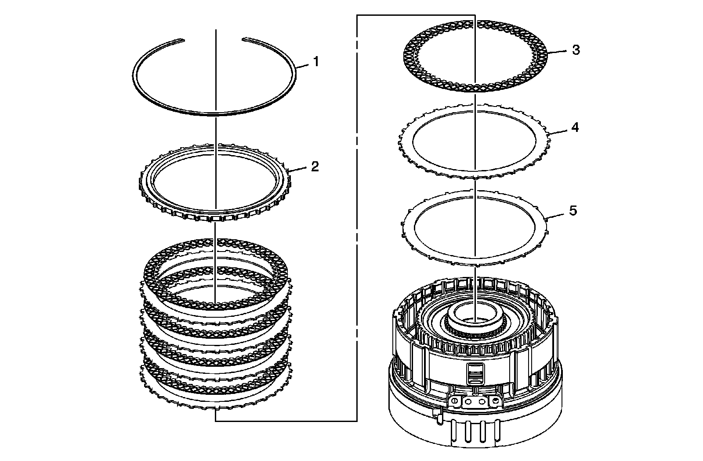
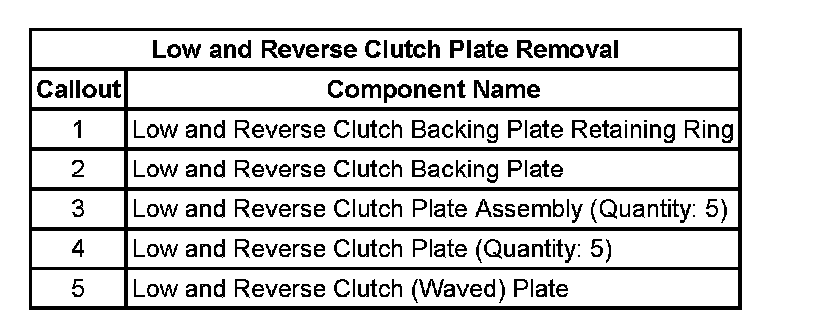
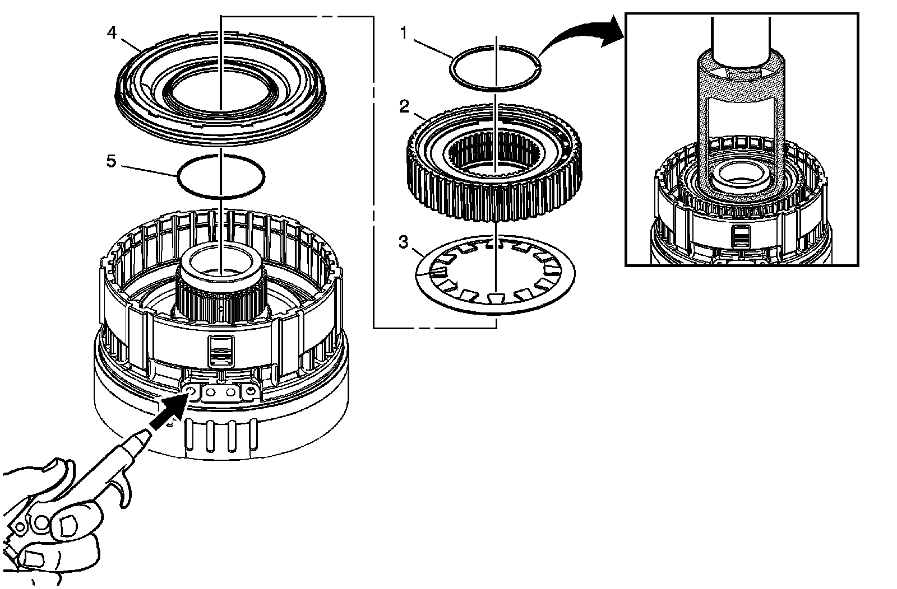
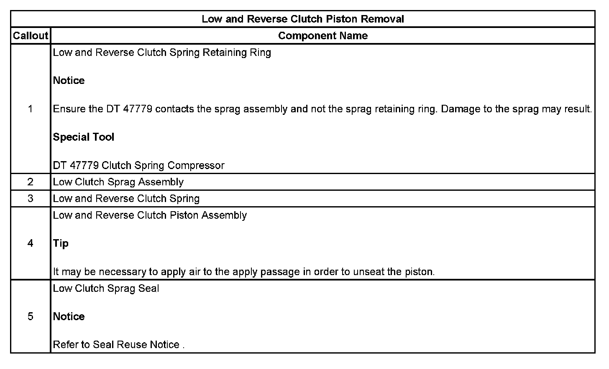
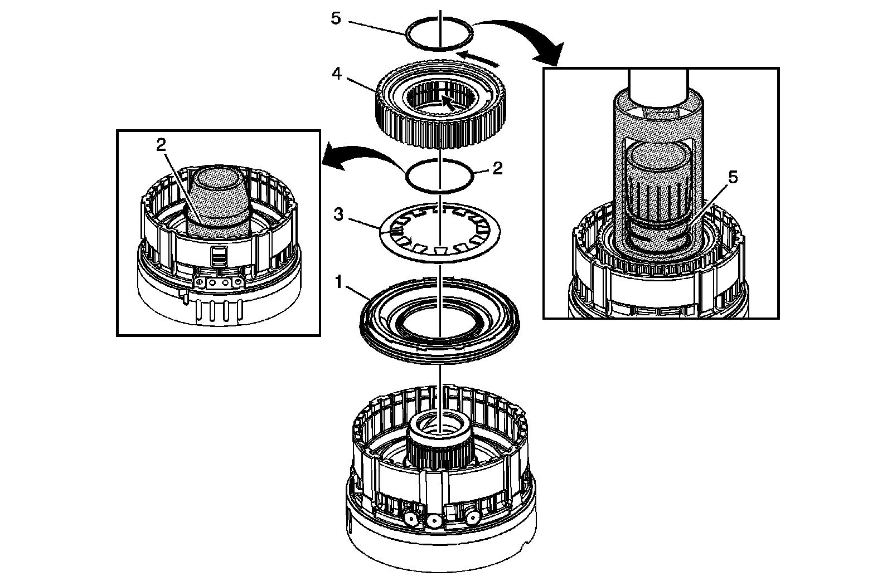
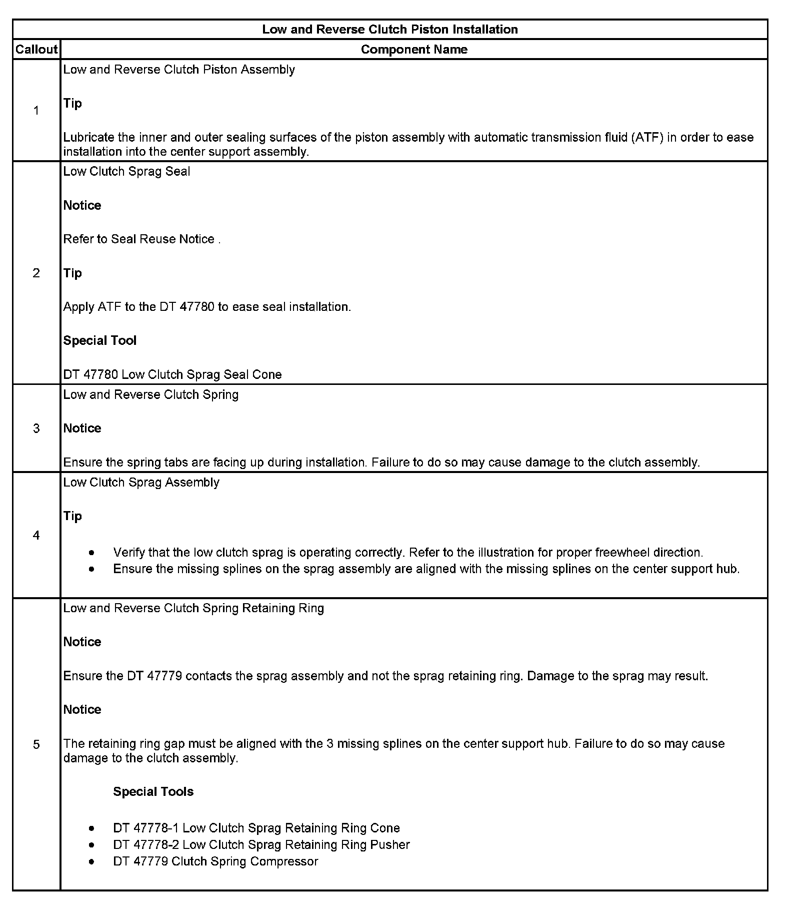
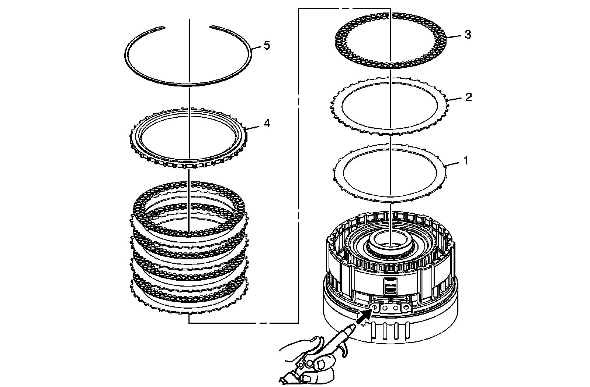
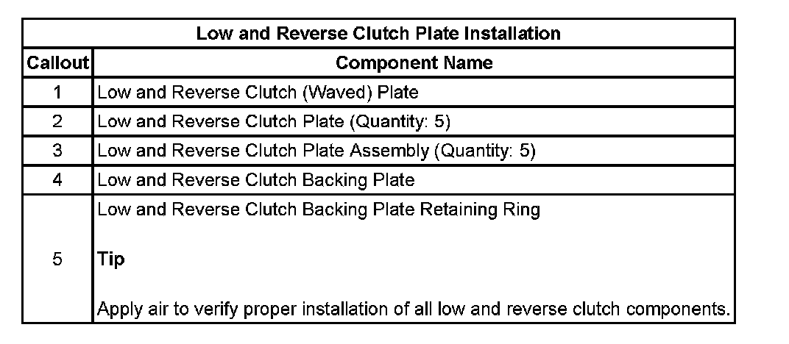

Low and Reverse Clutch Overhaul (6L80)
Low and Reverse Clutch Overhaul (6L80)
Low and Reverse Clutch Plate Removal


Low and Reverse Clutch Piston Removal


Low and Reverse Clutch Piston Installation


Low and Reverse Clutch Plate Installation

